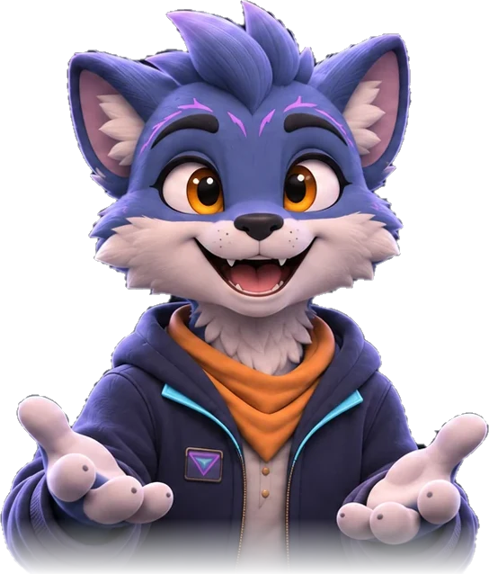
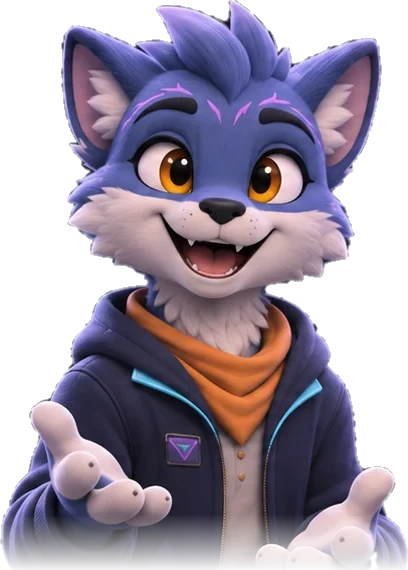

Same in all options. Räven fills the screen. What it says is a speech bubble by its head, not small text under it.

The page takes the whole screen. Räven is a small round head on top of it; its latest line is a bubble next to the head. Tap the head for the big fox.

The page takes the top three quarters. Under it a fixed strip: fox head to the left, its line to the right, like a chat row. Nothing covers the page.
Fox view and page view are each full screen. It turns to the page when one is shown; swipe or tap the dots to go back. On the page only a small head shows that Räven is talking, no text.